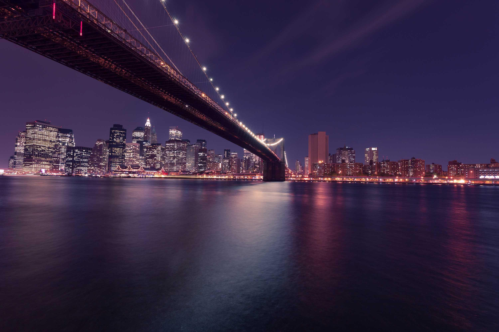

A Journey of Cultural Immersion, Luxury, and Hospitality
10th January, 2024

Citylights: Abu DhabiArabian Sands
The prospect of travelling to Abu Dhabi, the capital city of the United Arab Emirates, had always intrigued me. I had heard so much about its grandeur, luxury, and traditional Arabic culture that I couldn't wait to experience it myself. Finally, the opportunity presented itself, and I decided to embark on a journey from Mumbai to Abu Dhabi.
The journey began at Mumbai's Chhatrapati Shivaji International Airport, where I boarded a flight to Abu Dhabi. The flight was comfortable and the service was excellent, which set the tone for the rest of my trip. As we approached Abu Dhabi, I looked out of the window and was awed by the sight of the city's skyline. The towering skyscrapers, the pristine beaches, and the turquoise waters of the Arabian Gulf were all breathtaking.
Upon my arrival, I was met with a delightful and hospitable ambience that emanated from the city. The air was infused with an alluring aroma of exotic spices that teased my senses, and the sound of vibrant Arabic music filled my ears. The city's captivating charm was immediately apparent, with its intriguing blend of modern and traditional elements. The towering skyscrapers and gleaming buildings contrasted beautifully with the more subdued and historical architecture, creating an intriguing visual spectacle that left me in awe.
My first stop was the Sheikh Zayed Grand Mosque, which is one of the largest and most beautiful mosques in the world. The mosque's white marble and intricate design were mesmerizing. As I walked around the mosque's sprawling courtyard, I was struck by its peaceful and serene atmosphere. I also had the opportunity to witness the mosque's prayer rituals, which was a humbling experience.
During my tour of Abu Dhabi, I had the pleasure of visiting the iconic Emirates Palace, which is considered to be one of the most luxurious hotels in the world. The moment I stepped inside, I was awestruck by the breathtaking beauty of the interior. The walls were adorned with gold plating, and the crystal chandeliers hanging from the high ceilings sparkled as the sunlight streamed through the windows. The intricate Persian carpets beneath my feet added to the grandeur of the place. As I walked through the corridors and lounges of the hotel, I couldn't help but feel like royalty. Every element of the design and decor was carefully crafted to create a sense of opulence and grandiosity, making my visit an unforgettable experience.
In the morning, I visited the mosque and spent some time there, immersing myself in the peaceful and spiritual atmosphere. After that, I headed to the hotel to freshen up before embarking on my next adventure. Feeling energized and excited, I decided to explore the vibrant markets in the city. One particular marketplace that caught my eye was the Souk at Central Market, which was a bustling hub of activity. It was a sensory overload with vibrant colours, exotic scents, and the sound of vendors shouting out their wares. The marketplace was teeming with people, and I had to navigate my way through the crowds to explore the different stalls.
One of the highlights of my visit was the chance to hold a falcon on my arm.
The vendors were selling everything from exotic spices, and traditional Arabic clothing to unique handicrafts. I spent a good amount of time haggling with the vendors to get the best deals. I ended up buying some souvenirs to take back home, including a beautiful piece of pottery and a colourful scarf. It was an exhilarating experience that left me feeling satisfied and fulfilled. I highly recommend visiting the Souk at Central Market for anyone who wants to experience the true essence of the city's culture and traditions.
During my visit to Abu Dhabi, I had the opportunity to visit the world's largest falcon hospital - the Abu Dhabi Falcon Hospital. I was struck by the passion and knowledge of the hospital's staff, who were incredibly dedicated to the welfare of the falcons under their care. The hospital's facilities were impressive, and I was amazed to learn about the comprehensive medical care and rehabilitation services provided to the birds. One of the highlights of my visit was the chance to hold a falcon on my arm. The hospital staff provided me with detailed instructions on how to handle the bird safely and respectfully, which was an incredible privilege. As I held the falcon, I was struck by its beauty and power, and I could feel its muscles tense and relax as it adjusted to my presence.
As the sun slowly sank towards the horizon, I decided to head to the Corniche, a famous waterfront promenade that is known for its breathtaking views of the city's skyline. When I got there, I found that the Corniche was bustling with activity - families were enjoying picnics on the green lawn, joggers were running along the promenade, and tourists were taking photos of the stunning view. I found a bench and settled down to watch the sun set behind the towering skyscrapers, which was a truly unforgettable sight. The sky was painted with shades of orange, pink, and purple, and as the sun dipped below the horizon, it cast a warm glow over the water. The skyscrapers were silhouetted against the sky, and the whole scene was simply magical. I felt lucky to be able to witness such a beautiful moment, and I sat there for a while, just taking it all in.
Last night, I was in the mood for some traditional Arabic cuisine, so I decided to explore a local restaurant that I'd heard about. Upon arrival, I was pleasantly greeted by the cosy and intimate atmosphere of the place. It had a warm and welcoming ambience that made me feel relaxed and comfortable. The restaurant offered a variety of Middle Eastern dishes on its menu, including hummus, shawarma, and tabbouleh. I was excited to try these dishes as they are known for their unique flavours and aromas. I started with the hummus, which was rich and creamy, with just the right amount of garlic and lemon flavour. Then I moved on to the shawarma, which was cooked to perfection, juicy and tender with a perfect blend of spices. Finally, I tried the tabbouleh, which was fresh and light, with a perfect balance of parsley, mint, and tomatoes. Overall, the food was amazing, and I enjoyed every bite of it. I would highly recommend this restaurant to anyone who enjoys Middle Eastern cuisine.
During my last day in Abu Dhabi, I decided to explore Yas Island, which is a stunning man-made island that boasts some of the city's most popular attractions. One of the main highlights of my visit was Ferrari World, the largest indoor theme park in the world. The park was a dream come true for thrill-seekers like me, as it was packed with some of the most exciting rides and attractions I've ever seen. I even had the chance to experience the world's fastest rollercoaster, the Formula Rossa, which was an absolute adrenaline rush! The ride took me from 0 to 240 km/h in just a few seconds, and I felt like I was flying through the air. The park itself was a wonder to behold, with its red and white architecture and sleek design that perfectly complemented the Ferrari brand. All in all, my visit to Yas Island and Ferrari World was an unforgettable experience that I'll cherish forever.
My visit to Abu Dhabi was an incredibly immersive and unforgettable experience that surpassed all of my expectations. The city's unique balance of modernity and tradition was fascinating to witness. I was struck by the way the city seamlessly blends its rich history and culture with state-of-the-art technology and architecture. The luxurious hotels and attractions were nothing short of breathtaking, and I was blown away by the level of hospitality and service that I received throughout my trip. But what stood out to me was the warmth and kindness of the local people, who truly went above and beyond to make me feel welcome. All in all, I would highly recommend Abu Dhabi to anyone seeking a truly one-of-a-kind travel experience that will leave you with lifelong memories.